Colored grade bar
Green when you are on grade, orange and red as you move away.
User Manual › Grading and as-installed
Grading and as-installed
Activate a design and the screen turns into a grade guide: a bar down the side, a profile card at the bottom, and a countdown to the next change. Then record what you actually installed.
Green when you are on grade, orange and red as you move away.
Pulsing chevrons on the ground warn you before a reducer, required depth or the end of the run.
Record installed pipe against the design, tagged with the pipe you laid.
Start recording automatically when grade control engages.
On this page: Grading to a design: activating a gradeable · Countdown to a station while grading · Recording the pipe as installed
A gradeable is anything the plow can grade to: a recorded 3D line, or a pipe design. Only one is active at a time.
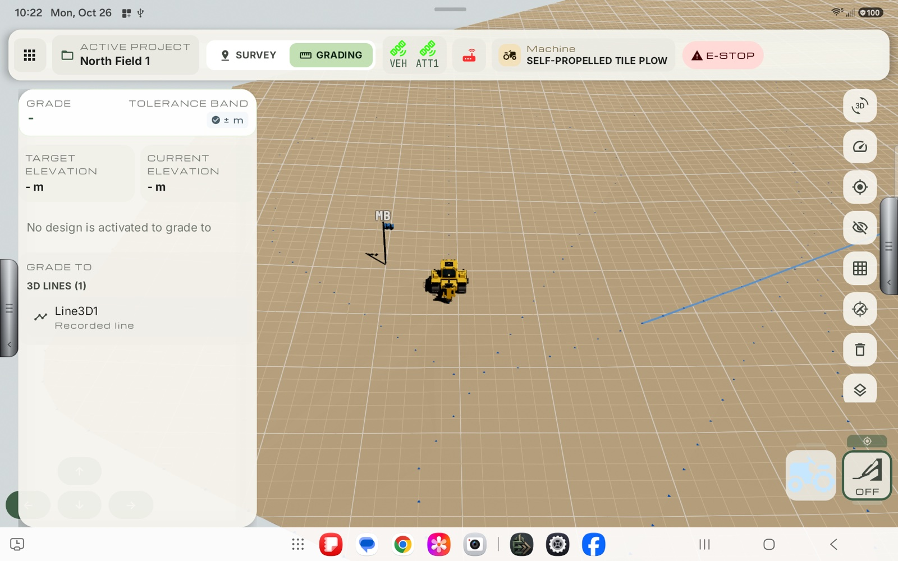
If the list is empty it says No gradeable designs in this project - record a 3D line or design a pipe.
The chosen design gets a check mark in the list, and the panel at the top changes to Bit grade (the plow's elevation error) with the Target elevation and Current elevation.
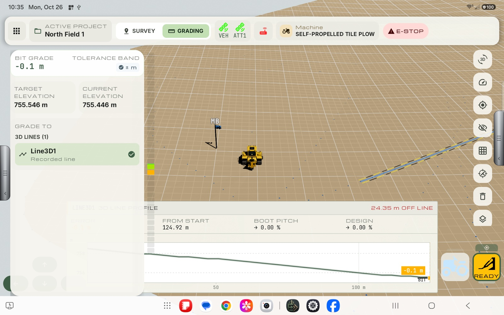
With the panel closed:
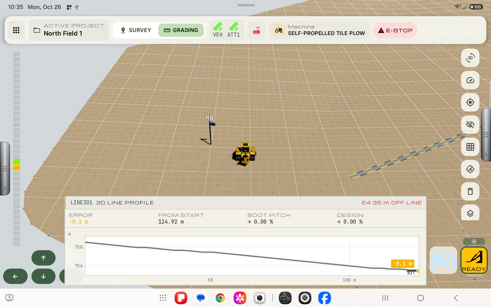
To stop grading to a design, tap the Deactivate button at the top right of the Grade to list. It shows only while a design is active. Tapping the active design again does the same. The design's lines are taken off the map. A design is also deactivated when you change project.
In Grading mode the right-hand handle opens Grading Options.
| Item | What it does |
|---|---|
| Large offset | How far the double-arrow buttons raise or lower the grade each press. |
| Small offset | How far the single-arrow buttons raise or lower the grade each press. |
| Current offset | The total offset applied to the design grade. The middle button clears it to zero. |
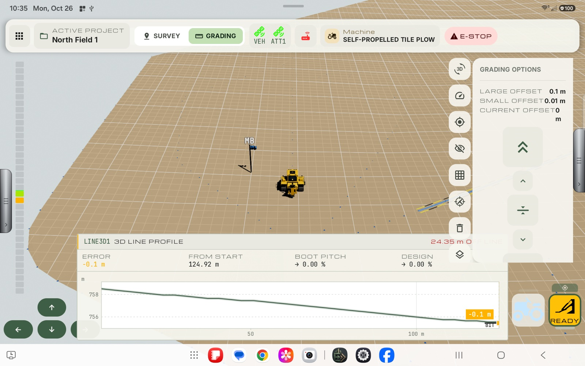
When a pipe design is activated and the machine is moving along it, the screen warns about the next station ahead.
The station shown is the next one in the direction the machine is travelling.
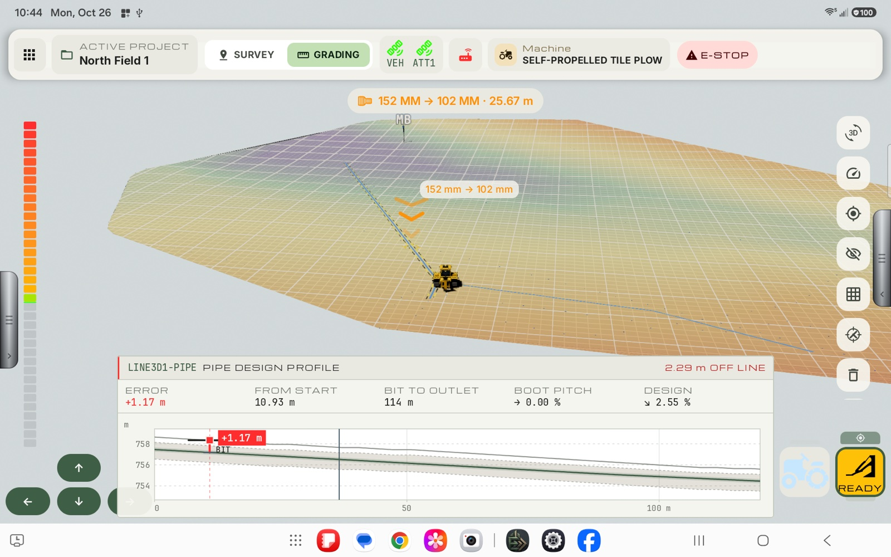
In the screenshot the machine is 25.67 m from a reducer where the pipe changes from 152 mm to 102 mm. Two things tell the operator to be ready to switch pipe:
When you reach the station, change to the new pipe.
Record installed pipe logs the path of the plow bit while you lay pipe against a design, so the project holds a record of what was actually put in the ground, as well as what was designed. It is for a pipe design (not a plain 3D line).
Under the boot button (bottom right) is a thin bar, the record chip. It is the button for pipe recording. It sits under the boot, because the bit is what is being recorded.
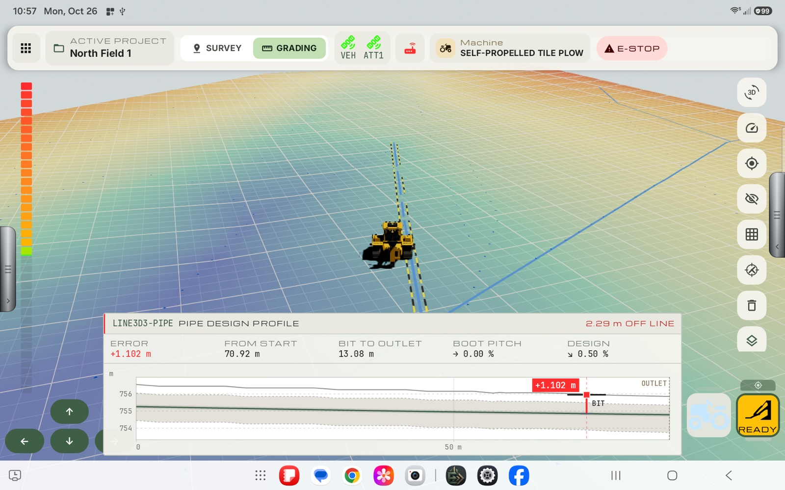
| Chip | Meaning |
|---|---|
| Faint, very thin | Nothing to record against. No pipe design is activated, or the boot has no position yet. |
| Grey bar | Ready. A pipe design is activated. |
| Red, with a pulsing dot and REC | Recording. |
| Red and blinking, NO FIX | Recording, but no position has come in for the last few seconds. Recorded points are only taken when the fix is good enough (see the required quality in your survey settings). |
| Amber, LINK | Waiting for grade control to engage (see Start automatically when grade control engages). |
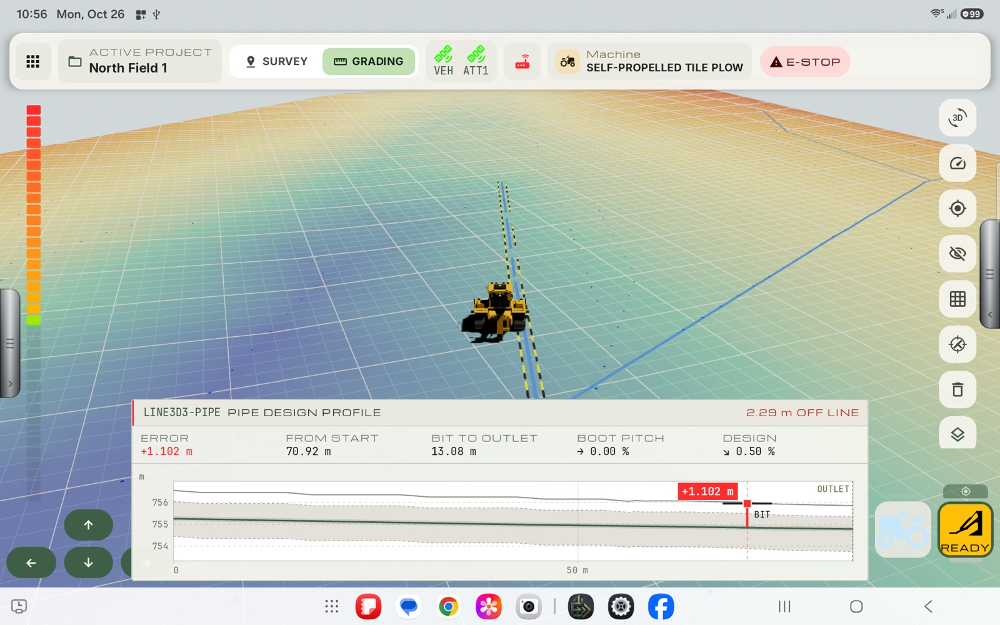
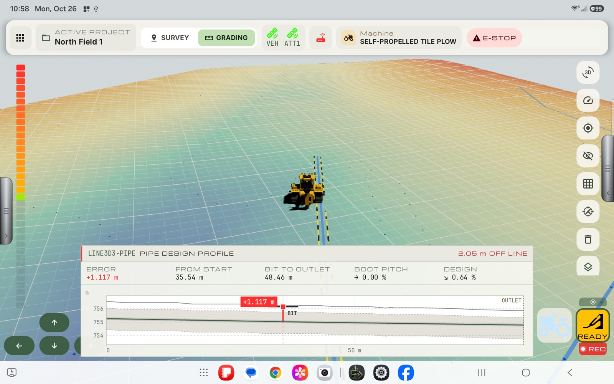
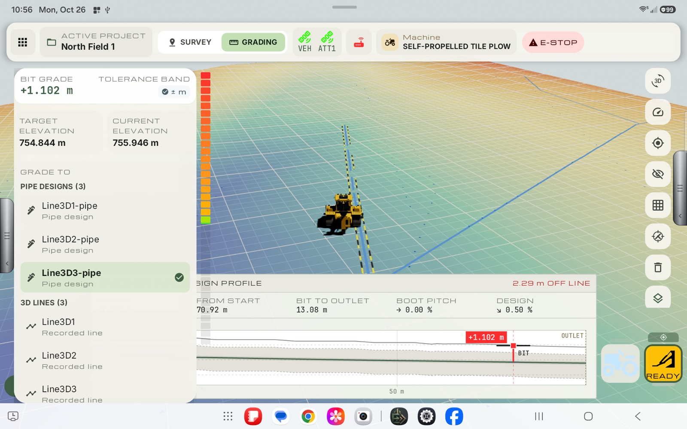
The recording is tagged with the pipe you say you are laying, so you must say which one.
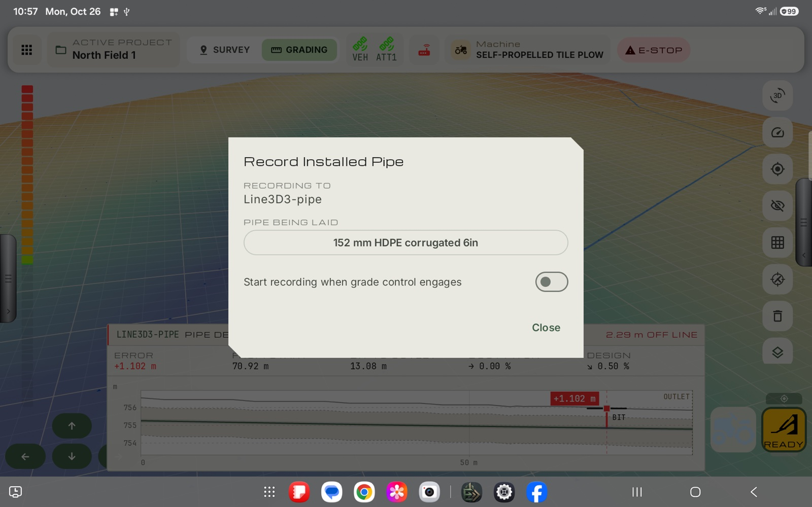
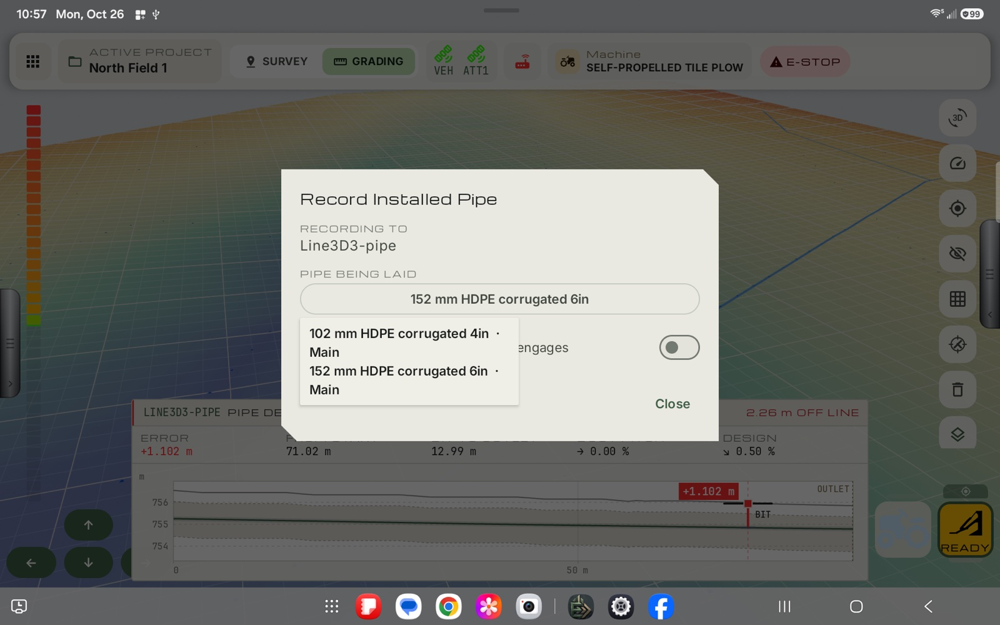
You can change the pipe in the middle of a run (for example when you switch to a smaller pipe at a reducer): open the dialog again and pick the new pipe. What was recorded so far is kept with the old pipe, and the rest with the new one.
The record is saved to the project as you go (roughly every second), so a crash loses very little. Leaving the run screen ends the recording and saves it.
In the dialog, turn on Start recording when grade control engages. The chip then turns amber and shows LINK.
If the design has a pipe change (a reducer) ahead, a banner appears above the chip while you are recording, for example Design: switch to 102 mm HDPE corrugated 4in in 12 m. When you reach it, change the pipe and tap Switched. This tells the record that you are now laying the pipe the design calls for. (It is the same as choosing the pipe in the dialog.)
The countdown pill and chevrons described in Countdown to a station while grading tell you where the change is. The banner and Switched button are how you say you have done it.